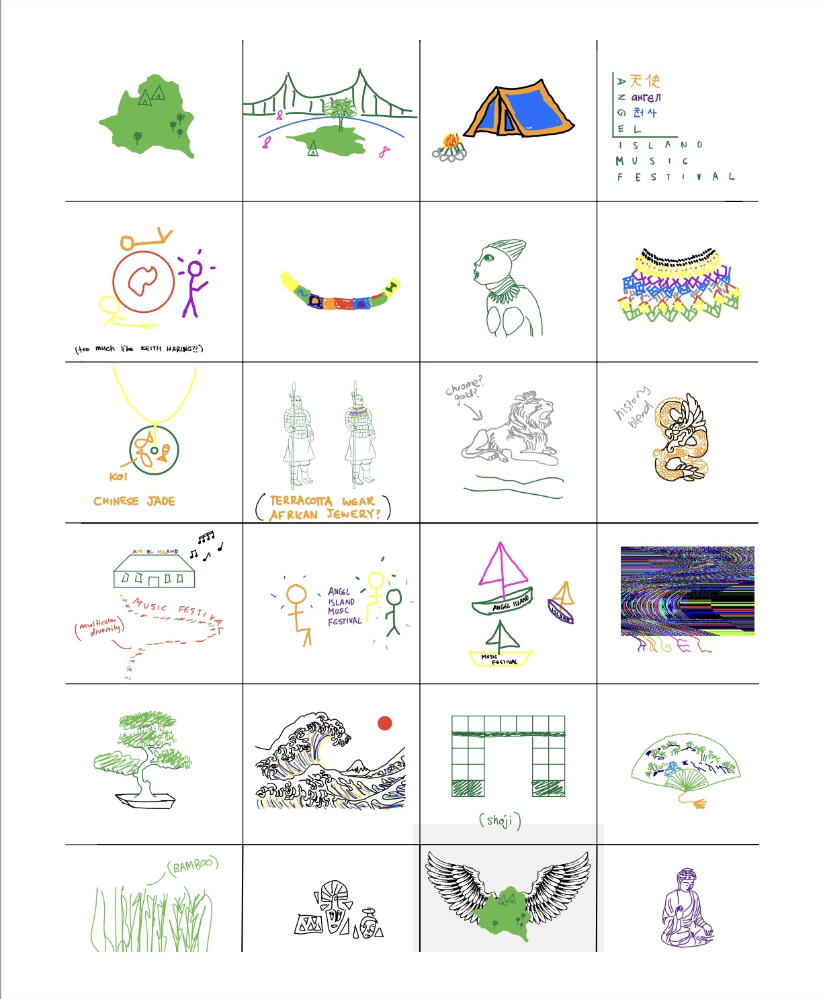
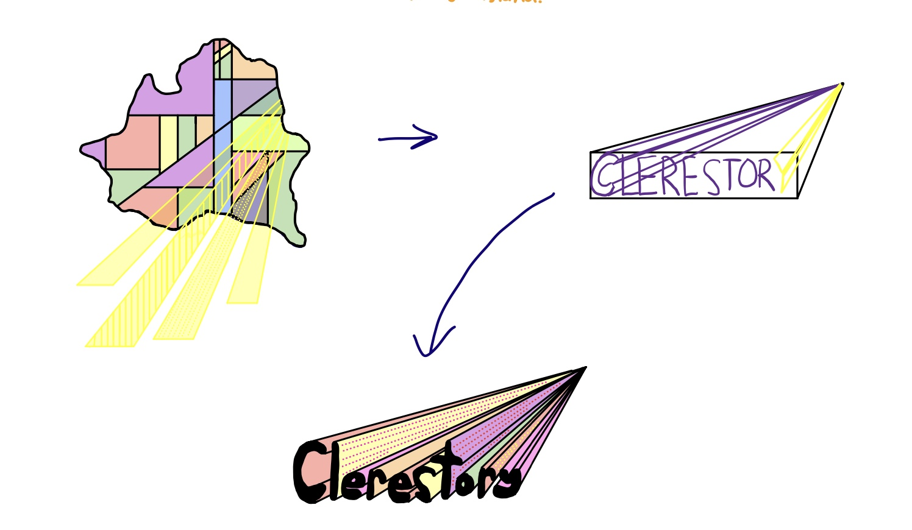
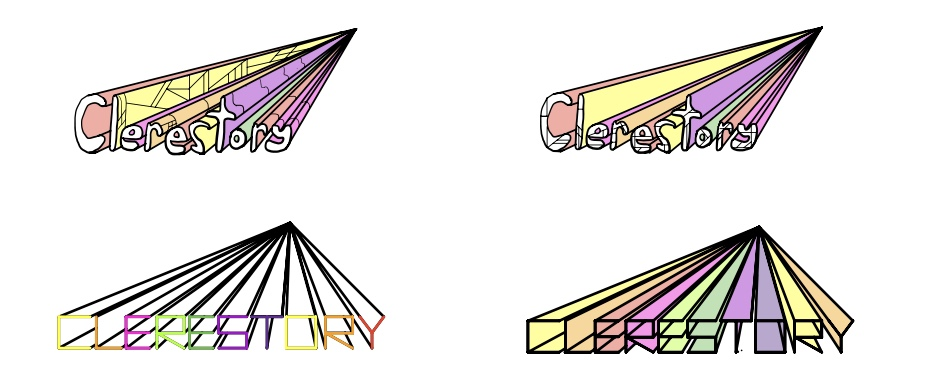
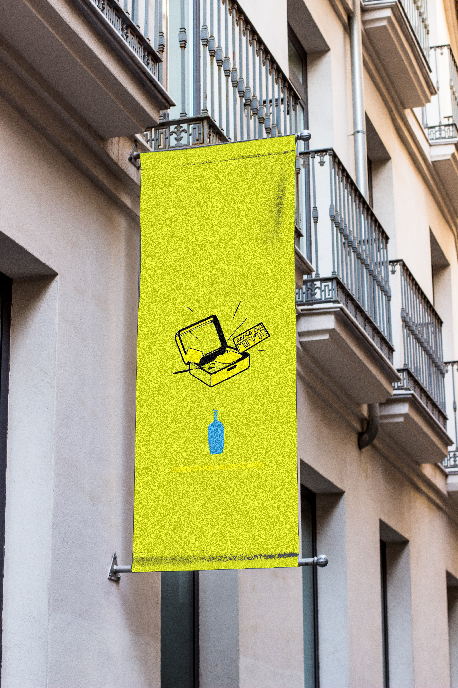
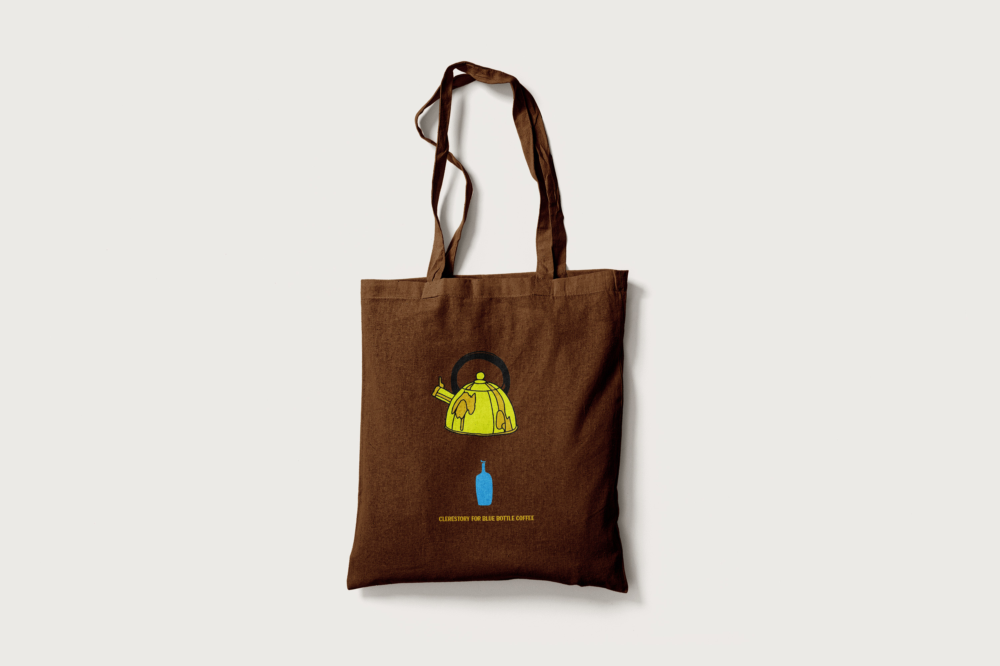

Brand identity · Experience design · Music and culture
Building Brand Identity
I designed a visual identity concept for a music festival celebrating global artistry. This was created using Adobe Photoshop and InDesign.
Exploration
Early sketching explored symbols, objects, landscapes, and musical references connected to Angel Island and the festival's multicultural premise before narrowing into a visual direction.



Applications
Testing the identity beyond the poster.


